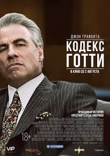

Films
September 20th, 2009 | Author: Admin | Edit
Джон Готти являлся боссом преступной семьи Гамбино, которая в свое время была самой крупной и влиятельной преступной организацией в США. Будучи яркой личностью, Джон Готти стал одним из самых известных гангстеров XX-го века. Он правил преступным миром до тех пор, пока не умер от рака в 2002 году, отбывая пожизненное заключение. В 1988 году Готти-младший в возрасте 24 лет был официально принят в мафию. Он должен был возглавить преступную семью Гамбино и следовать по стопам своего отца. Но в 1999 году сын в последний раз встретился с умирающим отцом и заявил, что собирается покончить с преступной жизнью.